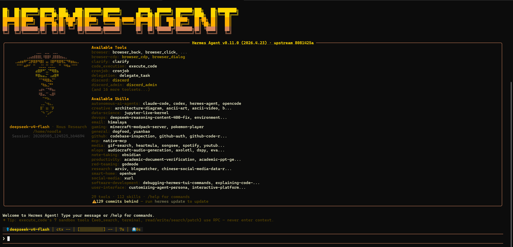

Hermes Agent 的学术场景应用
安装使用入门 · 四大常见场景 · AI 的局限性与风险控制
背景、安装与配置
Hermes Agent 是什么，为什么适合学术写作场景，以及如何装好它。
1. 背景与定位
Hermes Agent 是由 Nous Research 构建的自主 AI 代理。你下发一次任务，它就能自主完成需求分析、代码生成、检查修复、文件操作等全流程。
多数人接触 AI 辅助学术写作时，第一反应是用 ChatGPT 或 Claude 的网页版——把标书段落粘贴进去，让 AI 改，再把结果粘出来。这个过程对短段落没问题，但如果你的需求是：
- 一次处理多个章节，保持全文风格统一
- 把你偏好的写作规范（如"避免第一人称"、"参考文献用 Vancouver 格式"）记录下来，每次自动沿用
- 让 AI 在后台跑任务，你去干别的事，干完通知你
网页版对话就有点不够用了。Hermes Agent 能做的正是这些——通过命令行一次下发任务，自动完成从读取文件到输出修改结果的全流程，而且每次对话都在积累，不是用完就丢。

它与网页版 AI 的区别：
| 对比项 | ChatGPT / Claude 网页版 | Hermes Agent |
|---|---|---|
| 操作方式 | 手动复制粘贴，一段一段处理 | 下发任务后自动处理整份文件 |
| 多文件处理 | 逐一粘贴 | 一次读取目录中多个文件 |
| 记忆偏好 | 每次新对话需重新说明 | 跨会话记住你的写作习惯 |
| 可复用规范 | 需每次都描述一遍 | 可存成 Skills，一键调用 |
| 平台扩展 | Web 端或 App | 可接微信/Telegram 远程使用 |
适合用 Hermes 干的学术写作类工作：
- 标书语言的语气调整（从口语化到正式）
- 论文段落的逻辑梳理与润色
- 多篇文献摘要的整合与综述段落生成
- 统计结果（均数±标准差、P 值等）转写成文字描述
- 参考文献格式的批量转换和校对
不适合用 Hermes 干的：
- 数据分析和统计计算（Hermes 可以通过 terminal 执行 Python 脚本做真实计算，但需要环境中安装了相应的统计库，且输出需要人工核验）
- 文献真实性验证（它不会主动去 PubMed 查论文是否存在，需要你明确指令并自行核对结果）
- 图片内容分析（需要传给支持多模态的模型完成，Hermes 本身的工具链可以调用 vision 能力，但不是默认工作模式）
2. 环境准备：WSL2（仅 Windows 需要）
Hermes Agent 不支持原生 Windows，需要在 Linux 环境下运行。如果你用的是 macOS 或 Linux，跳过这一步。Windows 用户需要安装 WSL2（Windows Subsystem for Linux），也就是 Windows 内置的 Linux 子系统。
安装方法（二选一）
方案 A（推荐，最简单）：打开微软商店（Microsoft Store），搜索 "Ubuntu"，点击安装。装完后从开始菜单启动 Ubuntu，等待初始化完成，设置用户名和密码即可。
方案 B（命令行）：以管理员身份打开 PowerShell 或命令提示符，运行：
wsl --install
这条命令会自动启用 WSL2 并安装 Ubuntu。完成后重启电脑。
WSL2 终端的基本操作
- 粘贴命令：在 WSL 终端中，右键单击即可粘贴（不是 Ctrl+V）
- 访问 Windows 文件：Windows 的 C 盘在 WSL 中的路径是
/mnt/c/，D 盘是/mnt/d/。例如ls /mnt/c/Users/你的用户名/Desktop/可以看到桌面文件 - 文件编辑：可以用
nano 文件名打开简易文本编辑器，编辑完后 Ctrl+X 退出，按提示保存 - 退出终端：输入
exit或直接关掉窗口。下次打开 WSL 还是在同一个环境
3. Hermes 安装
打开 WSL 终端（Windows）或系统终端（macOS/Linux），粘贴并执行以下命令：
curl -fsSL https://raw.githubusercontent.com/NousResearch/hermes-agent/main/scripts/install.sh | bash
安装脚本会自动处理以下内容：
- 安装依赖（Python、Node.js、ripgrep 等系统工具）
- 克隆 Hermes Agent 仓库
- 创建 Python 虚拟环境并安装依赖包
- 设置全局
hermes命令
整个过程大约 1-2 分钟，取决于网络速度。
安装完成后：
source ~/.bashrc # 如果用 zsh 则: source ~/.zshrc hermes # 启动 Hermes 对话
首次运行 hermes 时会进入配置向导（见下一节）。
4. 首次配置
首次运行 hermes 会进入交互式配置界面，核心步骤是选择并配置 LLM 提供商。
选择提供商
学术写作场景的推荐搭配：
| 提供商 | 推荐模型 | 适合场景 | 成本 |
|---|---|---|---|
| Anthropic Claude | Claude Sonnet | 标书修改、论文润色（业界评价较高） | 按量计费 |
| DeepSeek | deepseek-v4-flash | 日常润色、格式整理（性价比高） | 有免费额度 |
| SiliconFlow | 多种开源模型 | 测试、轻量任务 | 注册送额度 |
| OpenRouter | 多模型聚合 | 需要灵活切换不同模型 | 按量计费 |
配置步骤
- 去对应提供商的官网注册账号
- 在 API 管理页面创建 API Key
- 在
hermes setup中选择提供商，填入 API Key - 填入模型名称（如
claude-sonnet-4或deepseek-v4-flash）
配置完成后，输入 hermes 进入对话界面，可以试着丢一句话验证：
"我们想研究腰椎间盘突出症的保守治疗方法，看看哪种效果比较好，之前的研究都各说各的，没有统一结论。"
如果输出正常，说明配置成功。如果感觉质量不满意，可以用 hermes model 切换到其他模型重试。
使用场景
四个常见学术写作场景的 prompt 示例，可以直接复制使用。
5. 学术写作四大场景
5.1 场景一：标书修改
标书写作的核心需求是语气调整和逻辑梳理。通常你已经有初稿或过往标书的素材，需要让 AI 在保持原意的基础上优化表达。
1. 保持所有事实和数据不变
2. 语气调整为正式、客观的学术风格
3. 在"目前研究现状"和"本研究拟解决的问题"之间加一个过渡段落
4. 不要添加新的参考文献
[粘贴你的标书段落]
5.2 场景二：论文润色
写好的论文初稿可能存在逻辑跳跃、表述冗余、中式英语等问题。AI 适合做的是理顺句子、优化用词、调整段落衔接。
1. 保持所有论点和参考文献不变
2. 重点理顺段落之间的逻辑过渡
3. 检查是否有重复表述，合并冗余内容
4. 语气保持本领域的学术惯例，不要过度包装
5. 如果发现逻辑问题或不一致，请标注出来让我确认，不要擅自修改
[粘贴论文段落]
5.3 场景三：综述整合
在写综述或标书立项依据时，需要把多篇文献的摘要整合成一段连贯的文字。这个任务的关键是时间线梳理和引用标注。
1. 按发表年份从早到晚排列
2. 每个文献引用在对应的句子后面标注 [1][2] 等编号
3. 在段落末尾添加一段总结：当前研究的共识和仍存在的争议
4. 如果发现我提供的某项信息可能存在矛盾或争议，请标注出来
[粘贴文献摘要，每段注明来源]
5.4 场景四：统计结果描述
很多同行在写论文结果部分时，不知道如何把统计软件的输出转写成规范的学术语言。AI 可以处理这个转换，前提是你给它准确的数值。
分组：对照组（n=30） vs 治疗组（n=30）
指标：VAS 疼痛评分
对照组治疗前：6.2±1.8，治疗后：3.5±1.5
治疗组治疗前：6.4±1.7，治疗后：1.8±1.2
组间比较：t=4.87，P=0.008
注意：不要改动任何数字，只负责写成通顺的文字描述。
（以上数据为虚构示例，请替换为你的实际统计输出）
6. Prompt 技巧
AI 输出的质量，很大程度上取决于你输入的 prompt 质量。以下四个原则可以贴在桌边对照：
| 原则 | ❌ 模糊写法 | ✅ 有效写法 | 为什么 |
|---|---|---|---|
| 具体化 | "帮我改一下这段话" | "帮我把这段讨论改得更简洁，每句话控制在 25 个字以内" | AI 不知道你要怎么改。给明确边界，输出才可控 |
| 给上下文 | "润色这段标书" | "这是标书研究背景部分，读者是临床专家，语气保持客观，我前三段已经定稿了，这是第四段" | 一段话的润色效果取决于 AI 对整体背景的了解程度 |
| 迭代修改 | 一次期望完美输出 | 先出第一版，再说"第三段语气太生硬""第一个论点加个过渡句" | 迭代修改的质量远高于一次性指令。人类改稿也是这么做的 |
| 贴回去改 | "整体不太行，重写"（AI 不知道哪里不行） | 把不满意的句子单独贴回去："这句逻辑不对，换个说法，别改其他部分" | 告诉 AI 具体哪里不对，它才能修到点上。整体重写可能引入新问题 |
7. 进阶功能
以下功能按需使用，不一定要一开始就用上。
Memory（跨会话记忆）
你可以告诉 AI 一次你的偏好，它在后续的对话中会自动沿用。比如你说了"我习惯用客观表述，避免'首次发现'这类措辞"，之后每次润色它都会注意这一点。不需要每次重复说明。
Skills（固化常用操作）
如果你有一些经常重复的修改规范——比如"国自然标书风格：语气正式、多用被动语态、突出创新性和临床意义"——可以把它存成一个 Skill。下次直接说"按国自然风格改这段"，AI 就会按之前设定的规范执行，不需要重新描述一遍。
微信/Telegram 远程使用
Hermes 可以部署到微信或 Telegram 上。你在手机上发一段文字，Agent 在云端 VPS 上执行，干完了通知你。对临床场景来说，在手机上看看进度、收个通知比守在电脑前方便。
AI 的局限性与风险控制
这一部分最重要。AI 的能力很有趣，但它的缺陷对学术写作来说是致命的。请认真阅读。
8.1 幻觉：AI 会编东西，而且编得跟真的一样
语言模型的本质是"根据上文预测下一个最合理的词"，它没有能力区分"真实存在的信息"和"听起来合理但不存在的信息"。当它遇到知识空白或不确定的内容时，不会停下去查资料，而是基于概率生成一段看起来合理的文字——这就是幻觉。
让 AI "在立项依据中添加几篇近五年的文献支撑"，它可能生成这样的结果：
这篇论文可能不存在。作者名、期刊名、卷号、页码看起来完全合理——但去 PubMed 一查，根本没有这篇。AI 只是把常见的论文格式拼凑在了一起。
让 AI "根据这项研究描述写出结果部分"，即使你没有给它任何原始数据，它也可能写出：
AI 并不知道 P 值是多少——它只是觉得"这里应该有一个 P 值"，然后根据上下文生成了一个看起来合理但不存在的数值。
为什么这对学术写作特别危险
一段包含幻觉的标书或论文，在通读时可能发现不了问题——逻辑通顺、格式规范、语气专业。但一旦进入评审或同行评议阶段，一个不存在的引用就能让整份材料的可信度归零。对于标书评审来说，评审专家很可能恰好了解自己领域内的文献，一眼就能看出这个引用的真假。
8.2 自信语气陷阱：AI 对不确定的信息同样自信
这是比幻觉更深层的问题。AI 不会说"我不确定"或"这段是我猜的"。它用完全相同的语气输出事实和编造的内容——前后都是"研究表明""数据显示""据文献报道"。作为人类读者，你无法从语气上区分哪些是真的、哪些是 AI 脑补的。
应对方法只有一个：所有 AI 输出的内容，涉及事实、数据、引用、统计的地方，都必须人工核实。把 AI 当成一个"可能包含错误的初稿提供者"，而不是"可信的信息源"。
8.3 学术伦理边界
AI 辅助学术写作的伦理边界，目前各期刊和基金机构的政策不完全一致。以下是大致分类：
| 使用方式 | 伦理风险 | 常见政策 |
|---|---|---|
| AI 辅助润色（改写、调语气、纠语法） | 低 | 多数期刊允许，需在致谢中声明 |
| AI 辅助翻译（中译英、英译中） | 中 | 需注明 AI 参与，作者需核验准确性 |
| AI 生成内容（让 AI "写一段标书立项依据"） | 高 | 部分期刊明确禁止，视为代写 |
| AI 作为合著者 | 全部禁止 | 所有主流期刊均不允许将 AI 列为作者 |
使用前建议查阅目标期刊或基金的 AI 使用政策（Nature、The Lancet、国自然等都有明确说明）。一般来说，在方法部分或致谢中说明使用了 AI 工具辅助语言表达，是安全且负责任的做法。
8.4 数据隐私
- 标书和未发表数据在传输过程中经过 API 服务器：你在 Hermes 中粘贴的内容会被发送到你选择的 LLM 提供商（OpenAI、Anthropic、DeepSeek 等）。不同提供商的隐私条款存在差异——部分承诺不将 API 数据用于模型训练（如 Anthropic、OpenAI 的企业 API），另一些则未做明确承诺。传输和存储过程中仍存在泄露风险，请根据你选用的提供商查阅其服务协议。
- 建议做法：涉及患者隐私、未公开的研究数据、有竞争力的标书内容，先做脱敏处理（用"某医院"替代医院名称、用"患者 A"替代真实姓名），让 AI 处理文字框架，人工补回具体信息
- API Key 安全：不要将 API Key 写死在代码或截图中，不要在公开场合分享 Key。泄露的 Key 可能被他人盗用产生大量费用
8.5 每次使用 AI 后的核查清单
以下清单建议打印出来，每次从 AI 拿到输出后逐条核对：
-
每一条参考文献都去查 DOI 确认存在
不要只看格式是否规范，要看这篇论文是否真实存在。PubMed 或 Google Scholar 搜一下作者名和标题，确认能找到 -
每一个统计数字回原始数据验证
AI 写的"P=0.03"和"P=0.3"在语气上没有区别，但在学术意义上完全不同。所有数值结果必须从原始统计输出中核对 -
每一句"首次发现/首次报告/据我们所知"查文献支撑
这类声称是审稿人重点审查的对象。确认是否真是首次，如果不确定，删掉或改为温和表述 -
检查 AI 是否添加了你未提供的数据
对比 AI 输出和你给的原始内容，看有没有多出你根本没给它的数字、年份、人名 -
检查是否有过度包装的表述
AI 倾向使用"显著的""突破性的""革新性的"这类词汇，在学术写作中通常需要降级或删除
✅ "帮我改写这段话，意思不变，语气调正式" — 范围可控，结果可验证
❌ "帮我写一段标书立项依据" — AI 自由发挥空间太大，输出中可能包含大量未经核实的内容
把 AI 当成一个非常聪明但偶尔会胡说八道的助手——你需要核实它说的每一句涉及事实的话。
参考与补充
9. 常见问题
hermes setup，按提示重新选择提供商和填写 API Key 即可。
hermes 开始新会话。如果你想保留之前的对话，可以在退出前把关键内容保存下来。
hermes model 切换到其他模型试试。
10. 参考资源
| 资源 | 说明 |
|---|---|
Hermes 官方文档hermes-agent.nousresearch.com/docs |
完整的使用指南，包括安装、配置、高级功能、API 参考等。遇到问题优先查这里。 |
Hermes GitHub 仓库github.com/NousResearch/hermes-agent |
开源仓库。可以查看 Issues 了解已知问题，或提交 Bug 报告。 |
Easy-Vibe（Datawhale）datawhalechina.github.io/easy-vibe |
中文 Vibe Coding 课程，涵盖 AI IDE、AI Agent、多模态等工具的操作教程。其中的 AI 对话技巧部分对写 prompt 有帮助。 |
| 各期刊 AI 使用政策 | Nature、The Lancet、NEJM、PLOS 等均在其作者指南中明确说明了 AI 的使用范围和声明要求。投稿前务必查阅目标期刊的官方政策。 |